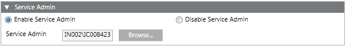

Service Admin Expander
The Service Admin expander displays only when you edit the StartSmc.bat file by adding the /support switch to it and then starting the SMC.
This expander is available only on server installations.
The Service Admin expander allows you to enable and configure the Service Admin user account. This account applies to all the projects of the SMC. Once enabled, the SMC operator, who is the currently logged-in user, is automatically assigned as Service Admin.
Using the Service Admin account, you can log onto the Desigo CC client application and work with a restored project, which was backed up by a different user for which user name and/or password are not known.

The Service Admin expander has the following two options:
Enable Service Admin
This option allows you to configure the local/domain user as the Service Admin. By default, the currently logged-in Windows user is set as the Service Admin.
Disable Service Admin
This is the default selection. If you do not enable the Service Admin and start a project, you cannot use the Service Admin user to log into Desigo CC .

NOTE 1:
The projects take over the changed System Admin user only when you restart the project.
NOTE 2:
For security reasons, when configuring the Service Admin, it is recommended that you do not use a local Windows user in a project working with multiple installed clients and FEPs. Local Windows accounts are less secure. Instead, you should use a Windows domain user.